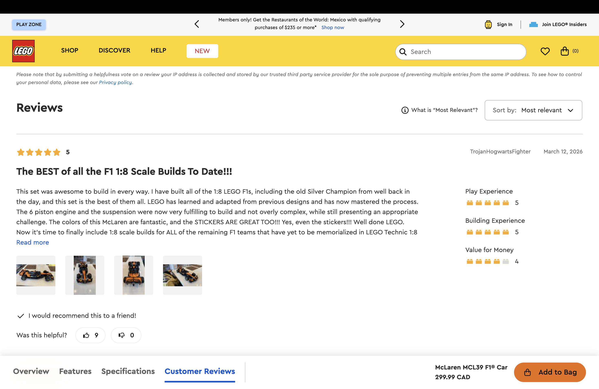
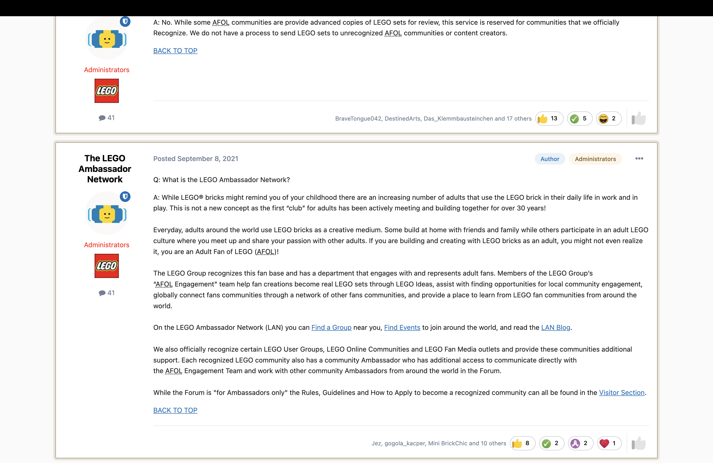
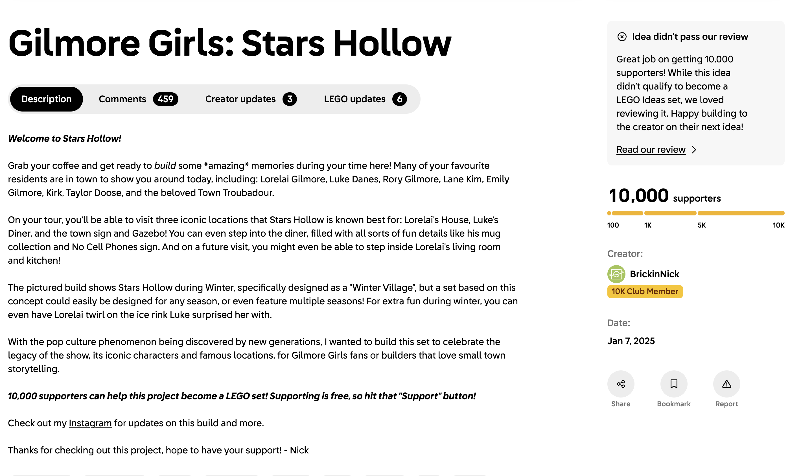
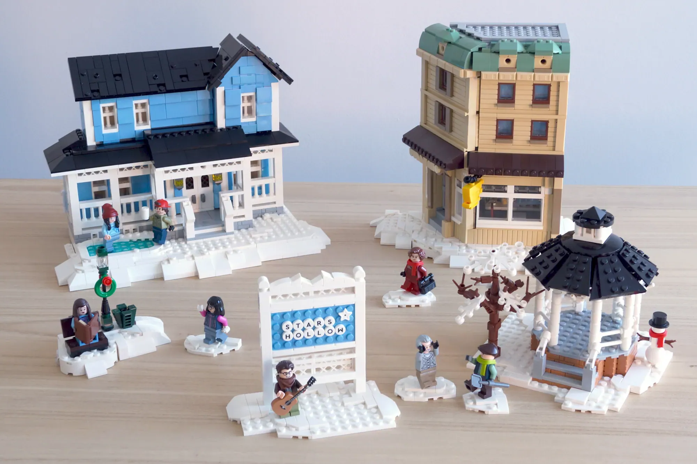
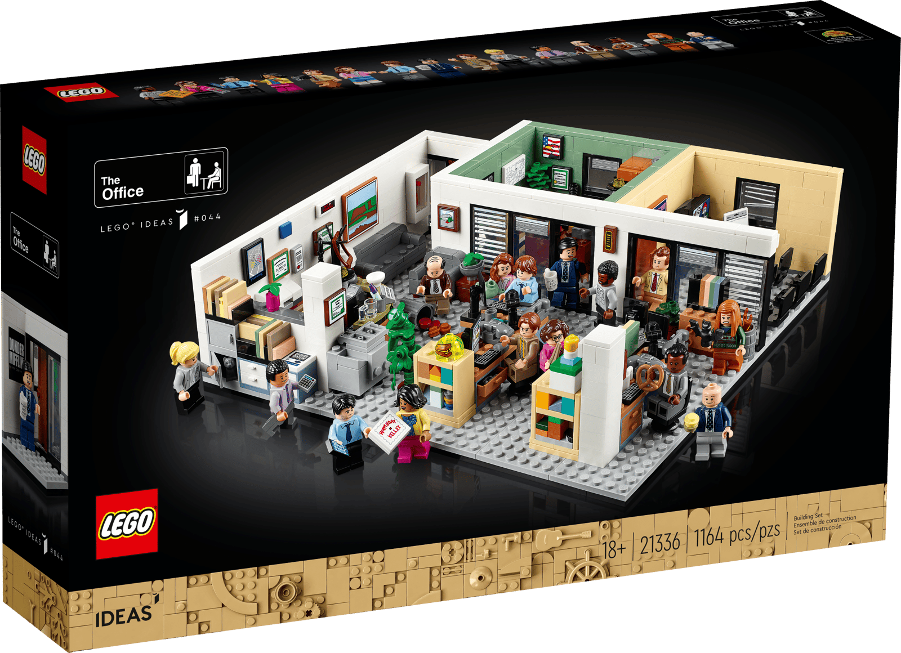
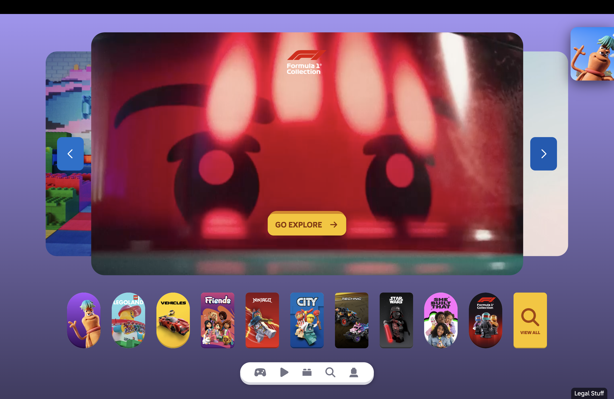
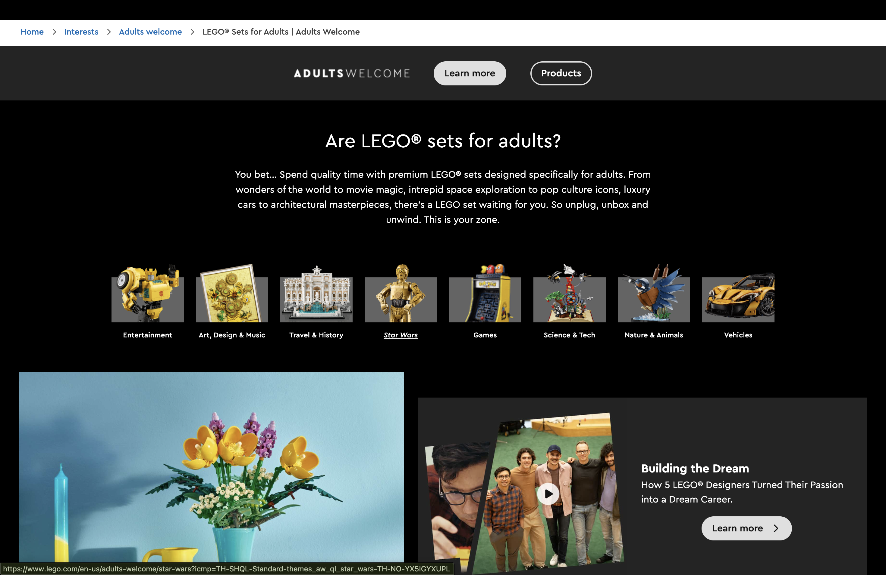
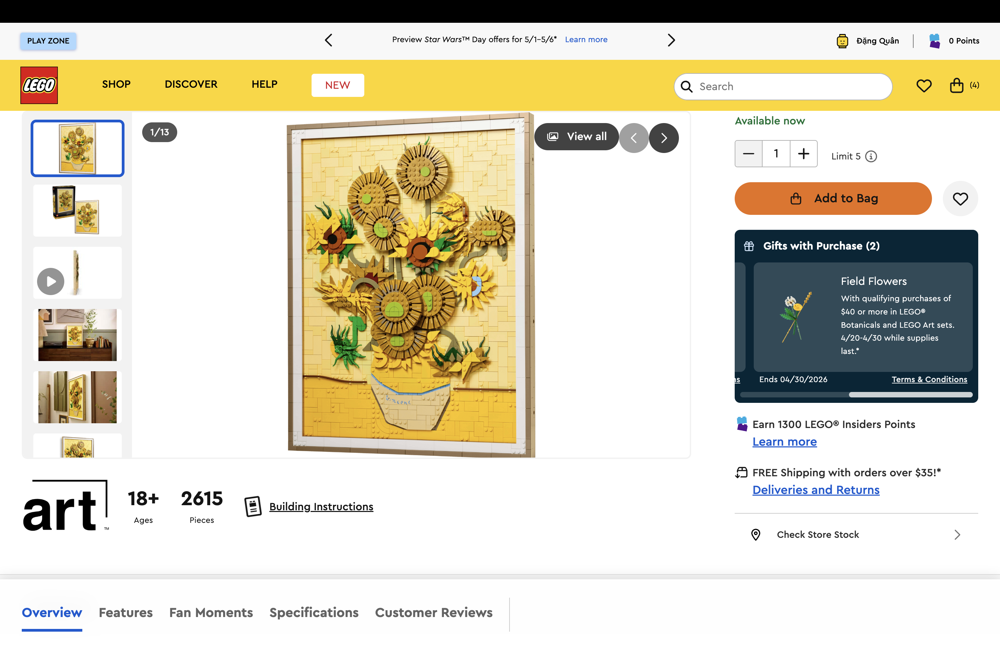
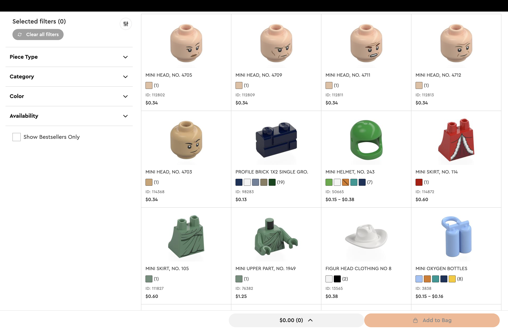
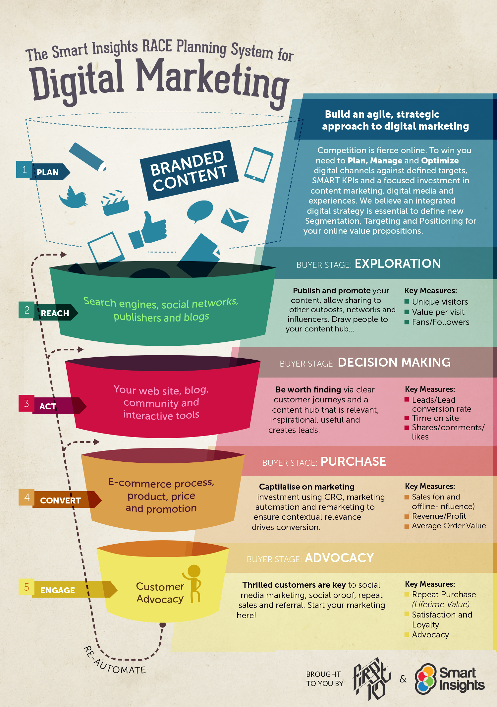

The LEGO Group, a family-owned Danish toy manufacturer, has long been regarded in academic and industry literature as a benchmark for consumer co-creation (Antorini, Muñiz and Askildsen, 2012). This entry applies Smith and Zook's (2016) Ladder of Engagement to evaluate how LEGO.com and its associated digital properties move consumers from passive observation toward active collaboration. The framework is used because it explicitly sequences customer participation from low-effort interactions (ratings and reviews) to high-effort partnership (co-creation), which allows a structured assessment of each digital touchpoint against a defined level of engagement intensity.
To avoid the common pitfall of framework application, it is important to recognise that Smith and Zook's (2016) model was developed before short-form video platforms matured, and therefore treats engagement rungs as relatively stable categories. This entry applies the model as a diagnostic tool rather than a prescriptive hierarchy, acknowledging that not every customer will climb every rung (Hollebeek, Glynn and Brodie, 2014).
Figure 1: The Ladder of Engagement (adapted from Smith and Zook, 2016).
1.2 LEGO's "Community-First" Strategy
LEGO treats its most engaged fans not as an audience but as an extension of its research and development function. The canonical academic account of this approach (Antorini, Muñiz and Askildsen, 2012) documents how LEGO moved from a closed innovation model in the 1990s—publicly stating it would not accept unsolicited ideas—to an open collaboration model after observing that its adult fan base was already modifying and redistributing its products. This shift reflects the broader service-dominant logic proposed by Vargo and Lusch (2004), in which value is co-created between firm and customer rather than delivered unilaterally.
The strategic rationale is grounded in brand community theory. Muñiz and O'Guinn (2001) established that a brand community is a specialised, non-geographically bound community based on a structured set of social relationships among admirers of a brand. Communities such as the Adult Fans of LEGO (AFOL) network provide the firm with three assets identified in subsequent brand community research (Schau, Muñiz and Arnould, 2009): social networking (peer introduction and welcoming), impression management (brand advocacy), and community engagement (documenting and staking milestones). Each of these maps onto a rung of the Smith and Zook (2016) ladder, as analysed below.
1.3 Evidence Across the Rungs of Engagement
1.3.1 Rungs 1 and 2: Ratings and Reviews
The foundational rungs of the ladder—ratings and reviews—are operationalised on LEGO.com through a structured evaluation interface. Rather than a single-field comment box, the review form asks customers to score three specific dimensions: Play Experience, Building Experience, and Value for Money, in addition to an overall star rating. This structure reflects the recommendation in Nielsen Norman Group's research on e-commerce product pages, which argues that category-specific ratings produce more actionable data than single overall scores (Sherwin, 2019).

Figure 1.1: Structured review form on LEGO.com showing separate scales for Play Experience, Building Experience, and Value for Money (LEGO, 2026a).
Peer-to-peer discussion is formalised through the LEGO Ambassador Network (LAN). The LAN grants recognised AFOL communities a direct communication channel with LEGO's AFOL Engagement Team, and certain communities receive early access to review copies of sets (LEGO, 2022). This model illustrates what Antorini, Muñiz and Askildsen (2012) describe as LEGO's practice of distinguishing between "recognised" and "unrecognised" communities—a governance structure that sets clear expectations without imposing corporate control on conversation.

Figure 1.2: Official LEGO Ambassador Network thread describing the community recognition process (LEGO, 2022).
1.3.3 Rungs 4 and 5: Ideas and Advocacy (Market Validation)
LEGO Ideas allows any user to submit a product concept; if a submission attracts 10,000 supporters within defined timeframes, it advances to an internal review stage, and a successful project is commercialised as an official set (LEGO Ideas, 2024). This operates as both a crowdsourcing mechanism and a form of pre-launch market validation: supporter counts provide observable evidence of latent demand before any tooling or manufacturing commitment is made, which aligns with Ogawa and Piller's (2006) argument that engaging lead users reduces new product development risk.
It is important not to overstate this effect. The LEGO Group does not publish comparative sell-through data for Ideas sets versus internally designed sets, and the majority of submitted projects do not pass the internal review stage even after crossing the 10,000-supporter threshold, as shown by the "Gilmore Girls: Stars Hollow" example below. The mechanism therefore reduces launch risk on selected sets rather than guaranteeing commercial success (Antorini, Muñiz and Askildsen, 2012).

Figure 1.3: LEGO Ideas submission page for "Gilmore Girls: Stars Hollow" showing the 10,000-supporter threshold and an example of an idea that advanced to review but was not selected for production.

Figure 1.4: The same fan-designed concept, illustrating the community-led nature of submissions on LEGO Ideas.
The highest rung—co-creation—is formalised through contractual terms rather than informal recognition. Under the LEGO Ideas Product Idea Guidelines, a successful fan designer receives a royalty of 1% of the net sales of the commercialised product, ten complimentary copies of the final set, and named credit on the product packaging and associated marketing materials (LEGO Ideas, 2024). This structure provides a public signal of partnership and a measurable financial return, and it illustrates what Prahalad and Ramaswamy (2004) describe as a value-exchange relationship in which the consumer becomes a co-creator of value rather than a recipient of it.

Figure 1.5: Packaging of LEGO Ideas set #21336 ("The Office"), which credits the fan designer on the physical box as required under the LEGO Ideas Product Idea Guidelines (LEGO Ideas, 2024).
1.4 Critical Reflection on the Model
Applying the ladder to LEGO reveals two limitations worth noting. First, the model is sequential in appearance but not in practice: most LEGO customers engage at rungs one to three and never progress higher, which is consistent with participation inequality observed across branded online communities (Hollebeek, Glynn and Brodie, 2014). Second, the ladder captures depth of engagement but not its quality; a fan who complains loudly at the discussion rung may generate more strategic value than a silent fan who has climbed to co-creation. These limitations do not invalidate the framework but suggest it is best used alongside complementary engagement measures rather than as a standalone diagnostic.
2. Evaluation of Social Platform
2.1 Introduction and Platform Selection
This entry evaluates LEGO's presence on TikTok using Tuten and Solomon's (2018) Four Zones of Social Media. TikTok is selected because it has become the most downloaded mobile application globally across multiple recent years (Statista, 2024) and because its algorithmic, interest-based feed differs structurally from the follower-based feeds of earlier platforms. This structural difference matters for a brand like LEGO: recommendation-driven distribution can deliver content to users who have not previously interacted with the brand, which creates opportunities and constraints that are distinct from those of Facebook or Instagram (Kaplan and Haenlein, 2010).
Tuten and Solomon's (2018) framework is applied because it treats social media as four interlocking functional zones rather than as a single medium, which allows each of LEGO's activities to be examined against the purpose it is designed to serve. The limitations of applying a published framework to a newer platform are acknowledged: the Four Zones model predates the dominance of short-form algorithmic video, and the analysis below adapts rather than mechanically applies its categories.
Figure 2: The Four Zones of Social Media (adapted from Tuten and Solomon, 2018).
2.2 Application of the Four Zones to LEGO on TikTok
2.2.1 Zone 1: Social Community
The Social Community zone concerns relationships, conversation and shared identity (Tuten and Solomon, 2018). LEGO's official TikTok account (@lego) uses the platform's native reply and Stitch functions to respond to named individual comments with dedicated video posts, which converts one-to-one interactions into public, sharable artefacts. This practice is consistent with the finding of Schau, Muñiz and Arnould (2009) that recognised and reciprocated communication from a brand strengthens community identification. It should be noted that this is a communication practice rather than a proven driver of sales; its immediate benefit is reputational and relational rather than transactional.
Figure 2.1: A LEGO TikTok video-reply to a comment from Marie Claire UK, illustrating reciprocal brand–consumer interaction in the Social Community zone (LEGO, 2026b).
2.2.2 Zone 2: Social Publishing
The Social Publishing zone concerns the creation and distribution of content (Tuten and Solomon, 2018). LEGO's published content on TikTok falls into three recurring formats: stop-motion animations, time-lapse builds, and behind-the-scenes studio footage. The account's pinned content shows individual posts with view counts in the millions, which indicates that the content is performing well on a platform where reach is distributed algorithmically rather than by follower size (LEGO, 2026b). Ashley and Tuten (2015) found that branded content emphasising functional demonstration and creative message strategies generates higher consumer engagement than purely promotional content, which is consistent with LEGO's observed approach.
Figure 2.2: A LEGO behind-the-scenes stop-motion post on TikTok, exemplifying the Social Publishing zone (LEGO, 2026b).
2.2.3 Zone 3: Social Entertainment
The Social Entertainment zone covers branded play, games and immersive content (Tuten and Solomon, 2018). LEGO's most visible activity in this zone is its partnership with Epic Games on LEGO Fortnite, a survival-crafting mode inside Fortnite launched in December 2023 that uses LEGO-styled characters and building mechanics (Epic Games, 2023). LEGO's TikTok account promotes the game through gameplay clips and cross-promotional content, which is consistent with the branded entertainment strategy described by Hudson and Hudson (2006), who argue that entertainment-embedded brands are more effective than standalone advertisements at creating sustained attention. The strategic caution here is dependency: the reach of this activation is contingent on a third-party platform, so the activation produces returns only as long as the underlying partnership and player base remain active.
Figure 2.3: Promotional imagery for LEGO Fortnite, the principal LEGO activation in the Social Entertainment zone (Epic Games, 2023).
2.2.4 Zone 4: Social Commerce
The Social Commerce zone covers retail and revenue-oriented activity on social platforms (Tuten and Solomon, 2018). LEGO's approach on TikTok is deliberately indirect: rather than using in-app TikTok Shop checkout, the profile uses a single link (lego.build/LEGOTikTok) that redirects to LEGO.com. This design choice keeps customer data, checkout experience and loyalty enrolment inside LEGO-owned infrastructure. Verhoef, Kannan and Inman (2015) argue that brands pursuing a controlled omni-channel strategy benefit from retaining ownership of customer data and consistent experience across touchpoints; LEGO's link-out structure is consistent with that logic. The trade-off is friction: every additional click between intent and checkout reduces conversion probability, so the decision to forgo native checkout reflects a prioritisation of data ownership over conversion rate optimisation.
Figure 2.4 (part 2): The destination after the link-out: LEGO.com's mobile experience, which preserves data ownership at the cost of native in-app checkout (LEGO, 2026a).
3. Website Evaluation
3.1 Introduction and Evaluation Method
This entry evaluates LEGO.com against a structured checklist of e-commerce usability criteria. The checklist draws on three established sources: the Nielsen Norman Group's usability research on e-commerce product pages (Sherwin, 2019), the Baymard Institute's large-scale checkout usability research (Baymard Institute, 2024), and Chaffey and Ellis-Chadwick's (2022) framework on digital marketing strategy, which organises website effectiveness around the objectives of customer acquisition, retention and loyalty.
Each criterion is scored on a five-point scale, where 5 indicates "meets or exceeds best practice as defined in the cited source" and 1 indicates "substantially below best practice". The scores are interpretive rather than the output of quantitative testing; they are based on direct inspection of the live site in April 2026 and on the benchmarks in the cited sources. This limitation is acknowledged: a more rigorous study would include moderated user testing and automated performance measurement.
3.2 Evaluation Checklist
Criterion
Benchmark Source
Score
Evidence and Analysis
Site navigation
Nielsen Norman Group (Laubheimer, 2022)
4.5/5
A persistent top-level "mega-menu" is organised by Shop, Discover and Help, with filters for Age, Theme, Interest and Price. The menu meets the Nielsen Norman Group guideline of predictable, scannable groupings; the main residual issue is depth on smaller mobile viewports.
Product information quality
Nielsen Norman Group (Sherwin, 2019)
5.0/5
Product pages include structured specifications (piece count, age, dimensions), high-resolution imagery, lifestyle photography, and downloadable building instructions. This matches the NNG recommendation that product pages answer questions before the user has to ask them.
Checkout flow
Baymard Institute (2024)
4.5/5
A guided, multi-step checkout with inline validation and an explicit guest-checkout option. This aligns with the Baymard Institute guideline that a clear guest option reduces abandonment; a single-page consolidated option would further reduce friction for returning users.
Payment options
Baymard Institute (2024)
5.0/5
Credit and debit card, PayPal, Apple Pay, Google Pay and the Klarna Buy Now, Pay Later option are all available at checkout. This spread covers the payment methods cited by the Baymard Institute as the most impactful for cart completion in higher-ticket e-commerce.
Trust and credibility
Google E-E-A-T (Google, 2023)
5.0/5
The site displays verified-buyer reviews, clear returns and delivery policies, and corporate social-responsibility reporting. External validation is provided by LEGO's ranking as the most reputable company in the world in the 2026 Global RepTrak 100 (LEGO, 2026c; RepTrak, 2026).
Performance and speed
Google Core Web Vitals (Google, 2024)
3.5/5
High-resolution product imagery and 3D preview assets are core to the brand experience but introduce load on slower mobile connections. A formal Core Web Vitals audit was not conducted; this score is an observational judgement and is the area most open to improvement.
Table 3.1: Evaluation of LEGO.com against established e-commerce usability benchmarks.
3.3 Analysis Against Chaffey and Ellis-Chadwick's Three Strategic Objectives
3.3.1 Customer Acquisition
Acquisition is supported by targeted audience segmentation on the homepage. The "Adults Welcome" section uses darker, minimalist visual design and aspirational category tiles ("Art, Design & Music"; "Science & Tech") that differ markedly from the vivid, gamified treatment used in the children's section. This separation reflects Chaffey and Ellis-Chadwick's (2022) argument that segmentation is a foundational step in digital strategy; without it, a generalist landing page dilutes relevance for every audience.

Figure 3.1: A category carousel on the LEGO.com homepage, used to direct traffic into segmented interest paths (LEGO, 2026a).

Figure 3.2: The "Adults Welcome" section, a distinct editorial space targeting the AFOL segment.
3.3.2 Customer Retention
Retention is driven by the LEGO Insiders programme, which is integrated into the purchase flow rather than offered as a separate membership page. Points earned are displayed on each product page (see Figure 3.3), and physical sets can be registered via QR codes inside building instructions to credit the buyer's account. Reichheld and Schefter (2000) established that small increases in retention rate produce disproportionately large increases in long-term profitability for online businesses; Insiders is the mechanism through which LEGO operationalises that principle by giving returning users a visible, persistent reason to remain logged in.

Figure 3.3: A LEGO.com product page for the "Vincent van Gogh – The Starry Night" set, showing the Insiders points-earned field in the purchase panel (LEGO, 2026a).
3.3.3 Customer Loyalty
Long-term loyalty is reinforced by high-utility service pages. "Bricks and Pieces" is a searchable catalogue of individual LEGO elements that allows customers to order replacement parts for sets they already own. This functionality extends the customer relationship past the initial purchase and reduces post-purchase dissonance, which Oliver (1999) identified as a key antecedent of repurchase intention. The strategic importance of this page is less about direct revenue and more about the signal it sends: a firm that sells the individual brick reassures the customer that an expensive set is not a single-point-of-failure purchase.

Figure 3.4: The "Bricks and Pieces" spare-parts interface on LEGO.com, which supports long-term product ownership (LEGO, 2026a).
4. Trend Analysis – Augmented Reality and the Connected Physical Product
4.1 Introduction and Trend Identification
The trend examined in this entry is the integration of augmented reality (AR) into physical consumer products, and the use of QR codes and companion apps to connect a physical item to a persistent digital experience. Rauschnabel et al. (2022) define AR marketing as a novel, potentially disruptive sub-discipline that integrates virtual content into a consumer's real-world environment and argue that it is reshaping consumer journeys from early-stage awareness through to post-purchase retention. The relevance of this trend to LEGO is direct: as a physical toy manufacturer competing for the attention of children and adults who increasingly spend discretionary time on screens, LEGO's response to AR is central to its long-term positioning.
The analysis is structured using Chaffey and Ellis-Chadwick's (2022) RACE framework (Reach, Act, Convert, Engage) because it links each stage of the customer lifecycle to specific, measurable digital activities. RACE is used here as a diagnostic scaffold; the framework's limitations, particularly its linear treatment of customer journeys, are acknowledged, and the analysis draws on Lemon and Verhoef's (2016) more recent conceptualisation of the customer experience as a non-linear, iterative process.

Figure 4: The RACE Planning Framework (adapted from Chaffey and Ellis-Chadwick, 2022).
4.2 Analysis Against the RACE Framework
4.2.1 Reach: Using AR to Generate Awareness
Reach concerns building awareness and driving traffic (Chaffey and Ellis-Chadwick, 2022). LEGO's most substantial AR product launch to date was LEGO Hidden Side, introduced at the American International Toy Fair in 2019, which was described at launch as the first LEGO play theme designed as a service—that is, where the AR app layer is intended to evolve continuously after the physical set is sold (LEGO, 2019). Although the Hidden Side theme has since been discontinued, its launch demonstrated the awareness-generation potential of AR: the novelty of the combined physical-and-digital format generated significant trade press coverage and earned media, producing reach that would have been costly to purchase through paid advertising. Rauschnabel, Felix and Hinsch (2019) found that AR applications generate brand attitude uplift through inspiration rather than through utilitarian value alone, which is consistent with the editorial coverage Hidden Side attracted.
Figure 4.1: Marketing imagery for a LEGO set incorporating AR overlays, illustrating how camera-based interaction extends the physical product (LEGO, 2026a).
4.2.2 Act: Encouraging Interaction Through Camera-Based Engagement
Act concerns persuading visitors to interact with the brand on their first visit (Chaffey and Ellis-Chadwick, 2022). AR supports this stage by converting a passive product image into an interactive, context-specific preview. Hilken et al. (2017) found that AR-based virtual try-before-you-buy experiences increase decision comfort and reduce perceived purchase risk, particularly for high-ticket or space-sensitive items; the relevance to LEGO is that large display-oriented sets, such as the Star Wars Ultimate Collector Series, are precisely the category for which AR previewing (projecting a 1:1 scale model into the customer's living space) would reduce hesitation to purchase. The strategic question is therefore not whether to offer AR but where in the journey to place it: offered too early it is a novelty; offered at the decision point, it becomes a conversion tool.
4.2.3 Convert: Reducing Friction Through QR Integration
Convert concerns turning intent into a completed transaction (Chaffey and Ellis-Chadwick, 2022). Printed QR codes on packaging and inside building instructions provide a direct mobile-optimised link from a physical touchpoint to a specific LEGO.com destination—often to the Insiders registration flow or to a related set's product page. This mechanism, which Rauschnabel et al. (2022) describe as an example of camera-based "bridging" between physical and digital environments, captures first-party data at the moment of highest engagement (immediately after a build is completed) and does so without reliance on third-party retailers or advertising platforms. The caution is that QR-based pathways are only as valuable as the destinations they lead to: poorly optimised landing pages convert a bridging mechanism back into friction.
4.2.4 Engage: Sustained Relationships Through the Digital Layer
Engage concerns developing long-term customer relationships (Chaffey and Ellis-Chadwick, 2022). The persistent digital layer attached to a physical product, whether through AR, a companion app, or a loyalty QR code, extends the customer relationship beyond the single transaction. This is consistent with Lemon and Verhoef's (2016) argument that customer experience is best understood as an iterative journey rather than a linear funnel, and with Hinsch, Felix and Rauschnabel's (2020) finding that AR-based experiences generate stronger brand attachment when they evoke nostalgia and meaningful association rather than novelty alone. For LEGO, whose adult segment is substantially driven by nostalgia for the brand (Antorini, Muñiz and Askildsen, 2012), this is a natural strategic fit.
4.3 Strategic Implications and Risks
The trend presents three clear opportunities for LEGO. First, AR and QR infrastructure allow the firm to capture first-party data from customers who purchased through third-party retailers, partially offsetting the data loss inherent in non-direct distribution. Second, the persistent digital layer extends product lifespan from a one-time event to a repeat touchpoint. Third, AR experiences are well-suited to the nostalgia-driven adult segment, which has grown to become a material share of LEGO's overall revenue.
Three risks warrant equal attention. First, AR experiences that feel bolted-on rather than integrated into play can damage brand perception, as discussed by Fast Company coverage of the original Hidden Side launch (Wilson, 2019), and this risk is not reduced by technical sophistication alone. Second, dependence on mobile operating-system permissions (camera access, app store policies) means that parts of the experience are controlled by third parties. Third, children's privacy regulation—particularly the US Children's Online Privacy Protection Act and the UK Age Appropriate Design Code—imposes strict requirements on any camera-based experience directed at under-13 users, which raises the compliance cost of any AR-enabled product aimed at the core children's market.
References
Antorini, Y.M., Muñiz, A.M., Jr. and Askildsen, T. (2012) 'Collaborating with customer communities: lessons from the LEGO Group', MIT Sloan Management Review, 53(3), pp. 73–79.
Ashley, C. and Tuten, T. (2015) 'Creative strategies in social media marketing: an exploratory study of branded social content and consumer engagement', Psychology & Marketing, 32(1), pp. 15–27. doi: 10.1002/mar.20761.
Hilken, T., de Ruyter, K., Chylinski, M., Mahr, D. and Keeling, D.I. (2017) 'Augmenting the eye of the beholder: exploring the strategic potential of augmented reality to enhance online service experiences', Journal of the Academy of Marketing Science, 45(6), pp. 884–905. doi: 10.1007/s11747-017-0541-x.
Hinsch, C., Felix, R. and Rauschnabel, P.A. (2020) 'Nostalgia beats the wow-effect: inspiration, awe and meaningful associations in augmented reality marketing', Journal of Retailing and Consumer Services, 53, article 101987. doi: 10.1016/j.jretconser.2019.101987.
Hollebeek, L.D., Glynn, M.S. and Brodie, R.J. (2014) 'Consumer brand engagement in social media: conceptualization, scale development and validation', Journal of Interactive Marketing, 28(2), pp. 149–165. doi: 10.1016/j.intmar.2013.12.002.
Hudson, S. and Hudson, D. (2006) 'Branded entertainment: a new advertising technique or product placement in disguise?', Journal of Marketing Management, 22(5–6), pp. 489–504. doi: 10.1362/026725706777978703.
Kaplan, A.M. and Haenlein, M. (2010) 'Users of the world, unite! The challenges and opportunities of social media', Business Horizons, 53(1), pp. 59–68. doi: 10.1016/j.bushor.2009.09.003.
Lemon, K.N. and Verhoef, P.C. (2016) 'Understanding customer experience throughout the customer journey', Journal of Marketing, 80(6), pp. 69–96. doi: 10.1509/jm.15.0420.
Muñiz, A.M., Jr. and O'Guinn, T.C. (2001) 'Brand community', Journal of Consumer Research, 27(4), pp. 412–432. doi: 10.1086/319618.
Ogawa, S. and Piller, F.T. (2006) 'Reducing the risks of new product development', MIT Sloan Management Review, 47(2), pp. 65–71.
Oliver, R.L. (1999) 'Whence consumer loyalty?', Journal of Marketing, 63(4 suppl. 1), pp. 33–44. doi: 10.1177/00222429990634s105.
Pears, R. and Shields, G. (2025) Cite them right: the essential referencing guide. 13th edn. London: Bloomsbury Academic.
Prahalad, C.K. and Ramaswamy, V. (2004) 'Co-creation experiences: the next practice in value creation', Journal of Interactive Marketing, 18(3), pp. 5–14. doi: 10.1002/dir.20015.
Rauschnabel, P.A., Felix, R. and Hinsch, C. (2019) 'Augmented reality marketing: how mobile AR-apps can improve brands through inspiration', Journal of Retailing and Consumer Services, 49, pp. 43–53. doi: 10.1016/j.jretconser.2019.03.004.
Rauschnabel, P.A., Babin, B.J., tom Dieck, M.C., Krey, N. and Jung, T. (2022) 'What is augmented reality marketing? Its definition, complexity, and future', Journal of Business Research, 142, pp. 1140–1150. doi: 10.1016/j.jbusres.2021.12.084.
Reichheld, F.F. and Schefter, P. (2000) 'E-loyalty: your secret weapon on the web', Harvard Business Review, 78(4), pp. 105–113.
Schau, H.J., Muñiz, A.M., Jr. and Arnould, E.J. (2009) 'How brand community practices create value', Journal of Marketing, 73(5), pp. 30–51. doi: 10.1509/jmkg.73.5.30.
Tuten, T.L. and Solomon, M.R. (2018) Social media marketing. 3rd edn. London: SAGE Publications.
Vargo, S.L. and Lusch, R.F. (2004) 'Evolving to a new dominant logic for marketing', Journal of Marketing, 68(1), pp. 1–17. doi: 10.1509/jmkg.68.1.1.24036.
Verhoef, P.C., Kannan, P.K. and Inman, J.J. (2015) 'From multi-channel retailing to omni-channel retailing: introduction to the special issue on multi-channel retailing', Journal of Retailing, 91(2), pp. 174–181. doi: 10.1016/j.jretai.2015.02.005.